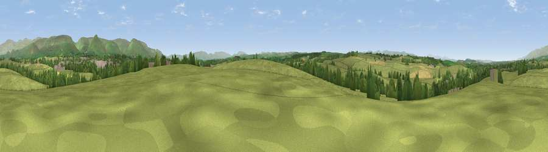

Viewpoint near Colby
#21122 in England · top 71% of its area beats it · near ColbyWhere it is
The exact computed spot (NY 67325 20025). Click the marker for map links.
The view, rendered

A 360° render of this exact spot computed from the terrain model, tree cover and land cover — summer colours, afternoon light, calibrated against photographs of famous viewpoints. Real trees, hedges and buildings will differ in detail.
The panorama
Grey silhouette: terrain skyline in each direction (720 bearings, Earth curvature and refraction included). Dashed green: skyline with trees (+15 m) and buildings (+8 m) as obstacles. Blue strip: how far the ground is visible on each bearing.
Where the view opens
Wedge length = distance to the farthest visible ground on that bearing (vegetation-aware). Rings at 10, 25 and 50 km.
What fills the view
82% grassland · 10% woodland · 4% built-up · 3% cropland
Angular shares of the visible panorama (visual magnitude), not map area. Landscape diversity 0.27 (0–1 Shannon).
Key numbers
More beautiful places nearby
The staircase of upgrades: each row has a higher view potential than everything closer. Driving times are estimates from straight-line distance, calibrated against real road routing — check an actual route before setting out.
| Place | Direction | Drive | Score |
|---|---|---|---|
| Viewpoint near Appleby-in-Westmorland | ESE · 2 km | ~5 min | 58.5 |
| Viewpoint near Hoff | SW · 3 km | ~8 min | 59.4 |
| Viewpoint near Maulds Meaburn | SW · 5 km | ~11 min | 61.3 |
| Viewpoint near Maulds Meaburn | SW · 5 km | ~12 min | 61.8 |
| Viewpoint near Maulds Meaburn | SW · 6 km | ~13 min | 62.2 |
| Viewpoint near Murton | NE · 6 km | ~14 min | 70.9 |
| Murton Pike | ENE · 7 km | ~14 min | 75.0 |
| Viewpoint near Hilton | E · 8 km | ~16 min | 75.2 |
54.57438, -2.50696 · source: screening · position refined by local search. Computed location — check access rights before visiting.